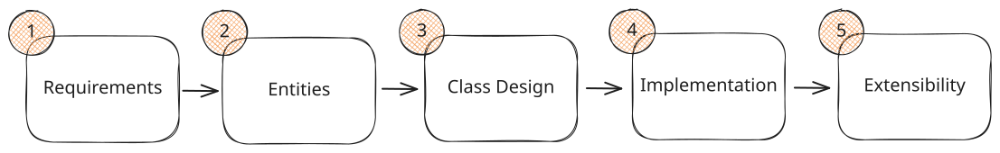

Low-Level Design in a Hurry
Delivery Framework
A step-by-step framework for structuring your low-level design interview.
Low-level design interviews move fast. You have roughly thirty-five minutes to clarify requirements, define your object model, design class APIs, and walk through the core logic. That's not a lot of time, and most candidates lose points simply because they manage it poorly.
The failure modes are predictable. Some candidates dive straight into code and get bogged down in edge cases before the interviewer even understands their structure. Others move slowly through setup, defining every tiny detail, and then run out of time before showing any meaningful design.
Our low-level design delivery framework aims to address this by providing you with a clear sequence and a sense of pacing. You know exactly what to cover first, what to cover next, and how long to spend on each section. That structure keeps you grounded when nerves kick in and stops you from drifting into the weeds.
If your interviewer pulls you off this framework to cover questions or extensions, follow their lead. Don't fight your interviewer, but gently guide the interview back to ensure you're covering the important bits.
Here's the framework.

Low-Level Design Interview Delivery Framework
1) Requirements (~5 minutes)
Every low-level design interview begins with a prompt, usually a single sentence that describes the system you're being asked to design.
“Design Tic Tac Toe.” “Design a parking lot system where cars are assigned to spots as they pull in” “Design a coffee machine that dispenses coffee and makes espresso”
The prompt is intentionally minimal. Your job is to turn it into a spec you can actually design around. You'll want to spend the first minute or two of the interview making the prompt unambiguous by asking questions.
Coming up with questions out of nowhere can be hard. To help prime your thinking, work your way down these themes:
- Primary capabilities — What operations must this system support?
- Rules and completion — What conditions define success, failure, or when the system stops or transitions state?
- Error handling — How should the system respond when inputs or actions are invalid?
- Scope boundaries — What areas are in scope (core logic, business rules) and what areas are explicitly out (UI, storage, networking, concurrency, extensibility)?
These themes work across every domain — games, devices, workflows, transaction systems, anything. Asking a small set of focused questions around these themes quickly reveals the full behavior the interviewer expects.
Use your answers to form a clear spec that you confirm with your interviewer. If you come across areas you’re explicitly not building, jot those down too — it’ll help keep your design focused and prevent scope creep.
For example, if you were tasked with "Design Tic Tac Toe," your final set of requirements, which you'll write on the shared whiteboard, might end up looking like this:
Requirements:
1. Two players alternate placing X and O on a 3x3 grid.
2. A player wins by completing a row, column, or diagonal.
3. The game ends in a draw if all nine cells are filled with no winner.
4. Invalid moves should be rejected (placing on an occupied cell, acting after the game is over).
5. The system should provide a way to query current game state and reset the game.
Out of Scope:
- UI/rendering layer
- AI opponent or move suggestions
- Networked multiplayer
- Variable board sizes (NxN grids)
- Undo/redo functionality2) Entities and Relationships (~3 minutes)
Once your requirements are settled, the next step is to take the requirements you just clarified and translate it into a few core entities with clean ownership boundaries. You’re shaping the structure of the system before you worry about the specifics of any one class.
Identify Entities
Start by scanning your requirements and pulling out the meaningful nouns. These are the “things” that clearly need to exist in your system. The goal is to capture the pieces of state and behavior that matter, not to model every word in the prompt.
It’s helpful to apply a simple filter:
- If something maintains changing state or enforces rules, it likely deserves to be its own entity.
- If it’s just information attached to something else, it’s probably just a field on another class.
This keeps your design from ballooning into too many micro-objects while still giving you structure.
Define Relationships
After identifying the entities, think through how they interact. This is where you establish the system’s shape:
- Which entity is the orchestrator — the one driving the main workflow?
- Which entities own durable state?
- How do they depend on each other? (has-a, uses, contains)
- Where should specific rules logically live?
These decisions give you a clean mental model of responsibilities, making the next step, class design, much more straightforward.
How to Represent This on the Whiteboard
Don't overthink this. A simple list of entities and a few arrows showing which objects own or use which others is more than enough. You're not drawing a full UML diagram, you're just communicating structure that you can build on later.
Some candidates get overwhelmed with notating these relationships in a rigid way, either with strict UML or other formal systems. Remember that the whiteboard is a way for you to communicate with the interviewer - don't fixate too much on notation. The important thing is that you're communicating your ideas clearly. Simple boxes, arrows, and labels work just fine.
For Tic Tac Toe, your whiteboard might show:
Entities:
- Game
- Board
- Player
Relationships:
- Game -> Board
- Game -> Player (2x)This is all your interviewer needs to follow your thinking. It shows the components, the flow of ownership, and the separation of responsibilities. From here, you’ll turn these entities into well-defined classes with explicit state and behavior.
3) Class Design (~10-15 minutes)
Once you’ve named your entities and sketched how they relate, the next step is to turn each one into an outline of an actual class. This includes what it stores and what it does.
You’ll now go entity by entity, working top-down. Start with the orchestrator (for Tic Tac Toe, this is the Game class), then move down to the supporting entities (Board, Player, etc.).
For each entity, you'll answer two questions:
- State - What does this class need to remember to enforce the requirements?
- Behavior - What does this class need to do, in terms of operations or queries?
If you stay disciplined about tying both state and behavior back to your requirements, you avoid guessing and you avoid bloat.
Deriving State from Requirements
Go back to your requirements list and, for each entity, ask:
- Which parts of the requirements does this entity own?
- What information does it need to keep in memory to satisfy those responsibilities?
You can literally build a small table in your head (or sketch it on the board):
Requirement → What this class must track
For Tic Tac Toe, here's how this works for Game:
| Requirement | What Game must track |
|---|---|
| "Two players alternate placing X and O on a 3x3 grid." | The two players, whose turn it is, and the Board |
| "The game ends when a player wins or the board is full." | Game state (in progress, won, draw) and the winner (if any) |
From that, you can list the state for the class on the whiteboard:
Game – State:
- board: Board
- playerX: Player
- playerO: Player
- currentPlayer: Player
- state: GameState (IN_PROGRESS, WON, DRAW)
- winner: Player? (null if no winner)Then repeat this process for the other entities in your system.
Deriving Behavior from Requirements
Once state is clear, move on to behavior. For each class, ask what operations the outside world needs and which requirements those operations satisfy. You're aiming for a small, focused API where each method corresponds to a real action or question implied by the problem.
For Tic Tac Toe, the requirements for Game translate to:
| Need from requirements | Method on Game |
|---|---|
| Players need to make moves | makeMove(player, row, col) returns bool |
| Ask whose turn it is | getCurrentPlayer() returns Player |
| Check game state | getGameState() returns GameState |
| See who won | getWinner() returns Player? |
| Inspect the board | getBoard() returns Board |
You'd repeat this process for each entity in your system until you've derived the state and behavior for all of them.
As you work through state and behavior, anchor on one principle: keep rules with the entity that owns the relevant state. This is encapsulation, sometimes called "Tell, Don't Ask" - objects should manage their own state and expose behavior, not getters for callers to make decisions. Workflow and lifecycle rules (like "can this operation run right now?") belong in the orchestrator. Data-specific rules (like "is this cell already occupied?") belong in the entity that owns that data. This keeps your APIs small and makes your design predictable—when something breaks, you know exactly which class to check.
Tying it all together, by the time you leave this section of the interview you've outlined the state and behavior for all of the classes in your system, like:
class Game:
- board: Board
- playerX: Player
- playerO: Player
- currentPlayer: Player
- state: GameState (IN_PROGRESS, WON, DRAW)
- winner: Player? (null if no winner)
+ makeMove(player, row, col) -> bool
+ getCurrentPlayer() -> Player
+ getGameState() -> GameState
+ getWinner() -> Player?
+ getBoard() -> BoardDon't get caught up in syntax here; it doesn't matter. I chose to model the class this way because it's easy to understand and follow, but it's not the only option. If you have something that works better for you or is closer to your language of choice, use that. If you don't have an established habit, feel free to copy this pattern.
What About UML Diagrams?
You've probably read other interview prep content that pushes UML diagrams, or Unified Modeling Language, with formal symbols for composition, visibility, and cardinality.
You won't see UML as part of our breakdowns. It's outdated and very rarely used in production systems. Engineers at modern companies design in code - they stub out classes, use interfaces in design reviews, or have AI fill in the details. Software engineers are fluent in reading code, so code is the natural medium for design work. As evidence of this shift, Microsoft removed UML tooling from Visual Studio in 2016 because usage had effectively dropped to zero.
UML was designed for a different era, when inspecting or running code was expensive. That tradeoff no longer holds. In an interview, where you're thinking out loud, iterating on a design, and reacting to feedback in real time, the added formality slows you down without adding clarity.
The class design notation we covered earlier is enough. It shows structure, relationships, and key methods without the ceremony.
That said, some interviewers will explicitly ask for UML, usually out of habit or academic training rather than any real requirement. If it comes up, ask whether simplified class notation is acceptable — it's faster to write and easier to discuss. In most cases, it will be.
4) Implementation (~10 minutes)
Once your class design is clear, the final major step is to implement the major methods of the classes you've designed.
Different companies expect different levels of detail here, so always ask your interviewer what they prefer before you start writing. Most interviews only need pseudo-code for the key methods. Some companies want near-complete code in a specific language. Others just want you to talk through the logic. Focus on the most interesting methods—the ones that truly define system behavior.
Unless otherwise specified, you should implement the major methods in pseudo-code, as we'll do here.
Start with the happy path—the normal flow when everything goes right. This makes the method's purpose and structure clear before you get into edge cases.
-
Happy Path - Walk through the method in a linear way: what inputs it receives, the sequence of steps it performs, the internal calls it makes to other classes, and what it returns or how it changes state. You want your interviewer to see how the system actually moves.
-
Edge Cases - After the happy path, enumerate the failure modes: invalid inputs, illegal operations, out-of-range values, calls that violate the current system state—anything that must be rejected or handled gracefully. This is an important step to demonstrate that you're thinking like someone who writes production code, not just toy logic.
Now convert your verbal walkthrough into simple, indentation-based pseudo-code. It doesn't need to be a specific language—just readable structure. In the case where the interviewer asks for complete code, write it in the language they specify (or that you choose).
Most interviewers are flexible. If you have a language you use on a daily basis, use that. Don't pick an unfamiliar language purely for the purpose of satisfying a single interviewer—this strategy fails more than it helps.
Keep the logic explicit so the interviewer can trace exactly what happens.
For example (using Tic Tac Toe only as illustration):
makeMove(player, row, col)
if state != IN_PROGRESS
return false
if player != currentPlayer
return false
if !board.canPlace(row, col)
return false
board.placeMark(row, col, player.mark)
if board.checkWin(row, col, player.mark)
state = WON
winner = player
else if board.isFull()
state = DRAW
else
currentPlayer = (player == playerX) ? playerO : playerX
return trueJust pick the most important methods that show how your classes cooperate, how state transitions occur, how you handle edge cases cleanly, and how logic is isolated in the right classes. More times than not, your interviewer will be explicit about which methods they want you to implement so follow their lead.
Patterns like Singleton, Factory, Builder, etc. can be impactful inclusions in your implementation. However, it's more common for candidates to overengineer by forcing patterns where they don't add value, as opposed to excluding them when they're required. Keep this in mind before you introduce a new pattern.
Verification: Walk Through a Specific Scenario
After implementing your core methods, take 1-2 minutes to verify your logic by tracing through a concrete example. The goal isn't to find syntax issues, but to catch logical errors before your interviewer finds them and to demonstrate your ability to verify your own code. Many interviewers are explicitly testing verification as part of their rubric.
Pick a simple but non-trivial scenario and step through it tick by tick, showing:
- Initial state
- What happens on each operation
- How state changes at each step
- Edge cases or transitions (like going from in-progress to completed)
For example, in Tic Tac Toe you might trace:
Initial: board empty, currentPlayer = X
makeMove(X, 0, 0) → board[0][0] = X, currentPlayer = O
makeMove(O, 1, 1) → board[1][1] = O, currentPlayer = X
...This catches issues like:
- Forgot to switch turns
- Win detection doesn't trigger
- State transitions happen in wrong order
- Edge case handling breaks the flow
You're not writing new code here, you're just proving to yourself and your interviewer that what you wrote actually works. If you find a bug during this walkthrough, fix it on the spot. That's far better than the interviewer discovering it later and is a positive signal regarding your ability to debug and fix issues.
5) Extensibility (~5 minutes, if time and level allow)
If there's time left after you've walked through your core implementation, the interview will often shift into extensions or follow-up questions. This part is usually interviewer-led. They'll propose a twist to see whether your design can evolve cleanly, not whether you can bolt on hacks.
How much you get here depends a lot on level and time:
- Junior candidates may get little or no extensibility discussion.
- Mid-level candidates might get one or at most two small follow-ups.
- Senior candidates can expect several “what if we…” questions in a row.
The extensions vary by domain, but the pattern is the same: the interviewer proposes a change, and you show how your design handles it without major restructuring.
For example, if you're asked "How would you add undo functionality?" you'd point to where state changes happen and explain:
"All state transitions flow through a single action method—makeMove in this case. To add undo, I'd introduce a command history stack. Each successful action records the previous state before modifying anything. An undo() method pops the stack, reverts to that state, and the rest of the system doesn't need to change."
This works because you've isolated state mutations. The interviewer sees your design has clean boundaries.
At this stage you should stay high level. You're not rewriting code; you're pointing to the parts of your design that make the change clean.
The goal of the follow-ups is to demonstrate that your initial design is extensible and robust. In other words, it can handle the natural follow-up questions without falling apart or turning into a pile of special cases.